The Reflection West Lake (Tây Hồ, Hà Nội): thông tin dự án và 18 mặt bằng căn hộ
Cập nhật 14/11/2026 · Thông tin dự án · Soi Giá Dự Án
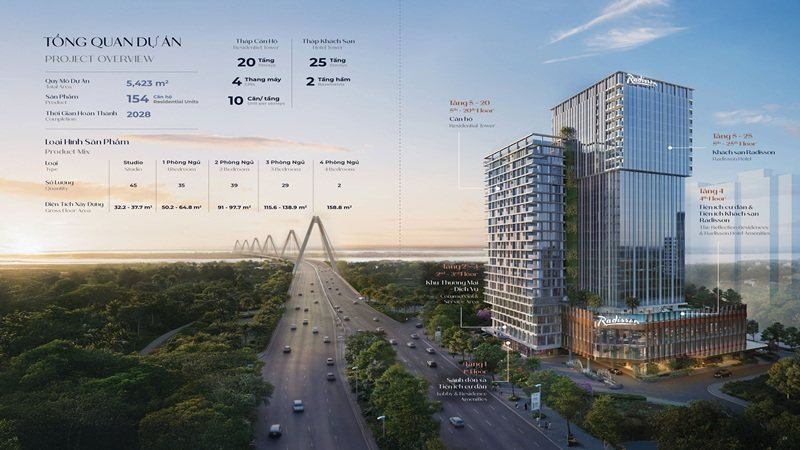
Hình 1. Trang tổng quan dự án trong brochure: phối cảnh, quy mô và cơ cấu căn. Nguồn: reflection-westlake.com (brochure của dự án).
Lưu ý. Bài này tổng hợp thông tin công khai, không phân tích giá hợp lý và không phải tư vấn đầu tư. Mức giá trong bài chỉ là con số tham khảo gần đúng từ các nguồn công khai, không phải bảng giá của chủ đầu tư. Hình ảnh và mặt bằng do chủ đầu tư hoặc đơn vị phân phối công bố, được dùng để minh họa và dẫn nguồn; thực tế có thể khác.
1. Tóm tắt nhanh
Quy mô154 căn hộ boutique, Tây Hồ
Loại cănStudio đến 4 phòng ngủ và penthouse
Mặt bằng công bố18 mẫu S1 đến D1
The Reflection West Lake là dự án căn hộ boutique của Kusto Home ở phường Phú Thượng, quận Tây Hồ, Hà Nội, gồm một tòa căn hộ 20 tầng liền kề khách sạn 25 tầng. Dự án chỉ có 154 căn, từ studio đến penthouse, và brochure công bố mặt bằng với diện tích tim tường và thông thủy cho 18 mẫu.
Hạng mục
Thông tin
Tên dự án
The Reflection West Lake
Chủ đầu tư / phát triển
Công ty TNHH Đất Hồ Tây; Kusto Home là đơn vị phát triển
Địa chỉ
Lô D1, phường Phú Thượng, quận Tây Hồ, Hà Nội
Quy mô
154 căn hộ; tòa căn hộ 20 tầng và khách sạn 25 tầng (thương hiệu Radisson quản lý); đất khoảng 5.423 m²
Cơ cấu diện tích
Studio 28,9–34,5 m²; 1PN 45,7–60,3 m²; 2PN 82,5–89,8 m²; 3PN 109–129,8 m²; 4PN 147,6 m²; penthouse 227,7–420,1 m²
Sở hữu
Sổ hồng 50 năm (theo trang tổng hợp)
Hoàn thành
Dự kiến năm 2028
Phân phối
Kusto Home ký hợp tác phân phối với Cen Land và Kiến Hưng (02/2026)
Giá bán
Chưa tìm thấy giá công khai; xem mục 5
Quảng cáo
2. Vị trí
Dự án nằm ở phường Phú Thượng, quận Tây Hồ, khu vực ven Hồ Tây phía bắc. Brochure thể hiện tòa căn hộ và khách sạn trên cùng một khối đế, nhìn ra trục đường lớn và cầu Nhật Tân phía xa.
3. Sản phẩm
Brochure chia căn hộ thành studio (S), 1 phòng ngủ (A), 2 phòng ngủ (B), 3 phòng ngủ (C) và 4 phòng ngủ (D). Mỗi mẫu ghi các tầng áp dụng, diện tích xây dựng (tim tường, GROSS) và diện tích thông thủy (NET). Bảng dưới lấy theo brochure.
Loại / mã
Số PN
Tim tường (m²)
Thông thủy (m²)
Ghi chú
S1
0
36,6
32,8
S2.1
0
32,6
29,1
S2.2
0
32,2
28,9
Cùng mặt bằng với S2.1
S2.3
0
33,0
29,6
Cùng mặt bằng với S2.1
S3
0
37,7
34,5
Cùng mặt bằng với S1
A1
1
64,1
58,1
A2
1
59,1
54,6
A3
1
50,2
45,7
A4
1
64,8
60,3
B1
2
95,4
88,9
B2
2
97,7
89,8
B3
2
91,0
82,5
C1
3
117,5
109,0
C2
3
125,7
116,9
C3
3
115,6
107,4
C4
3
131,9
122,0
C5
3
138,9
129,8
D1
4
158,8
147,6
Quy ước: GROSS = diện tích tim tường (xây dựng); NET = diện tích thông thủy. Các mẫu ghi “cùng mặt bằng” có diện tích gần như trùng với mẫu trước. Truy cập 14/11/2026.
Studio
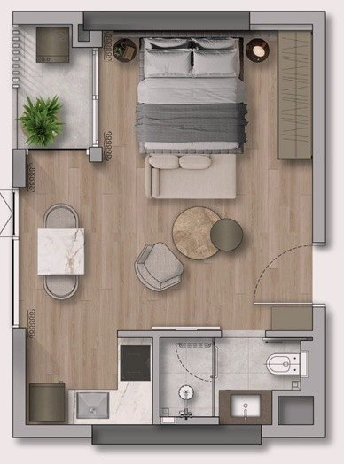
Hình 2. Mặt bằng loại S1 (tim tường 36,6 m², thông thủy 32,8 m²). Nguồn: reflection-westlake.com (brochure của dự án).
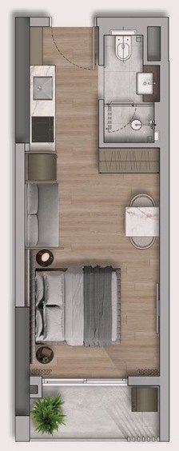
Hình 3. Mặt bằng loại S2.1 (tim tường 32,6 m², thông thủy 29,1 m²). Nguồn: reflection-westlake.com (brochure của dự án).
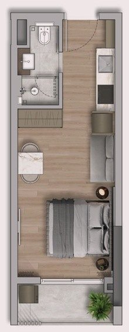
Hình 4. Mặt bằng loại S2.2 (tim tường 32,2 m², thông thủy 28,9 m²). Nguồn: reflection-westlake.com (brochure của dự án).
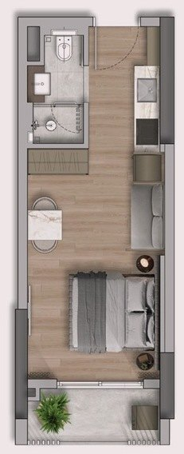
Hình 5. Mặt bằng loại S2.3 (tim tường 33,0 m², thông thủy 29,6 m²). Nguồn: reflection-westlake.com (brochure của dự án).
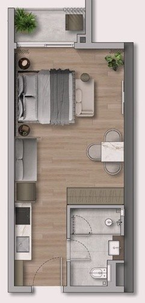
Hình 6. Mặt bằng loại S3 (tim tường 37,7 m², thông thủy 34,5 m²). Nguồn: reflection-westlake.com (brochure của dự án).
Căn hộ 1 phòng ngủ
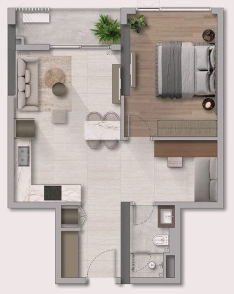
Hình 7. Mặt bằng loại A1 (tim tường 64,1 m², thông thủy 58,1 m²). Nguồn: reflection-westlake.com (brochure của dự án).
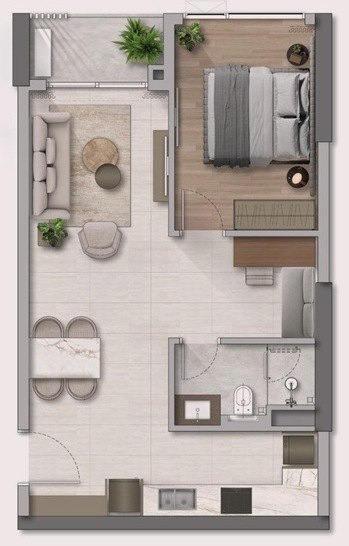
Hình 8. Mặt bằng loại A2 (tim tường 59,1 m², thông thủy 54,6 m²). Nguồn: reflection-westlake.com (brochure của dự án).
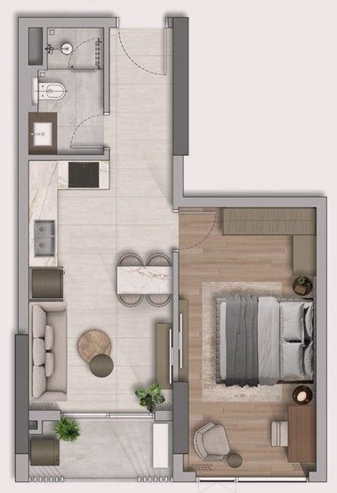
Hình 9. Mặt bằng loại A3 (tim tường 50,2 m², thông thủy 45,7 m²). Nguồn: reflection-westlake.com (brochure của dự án).
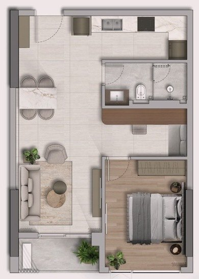
Hình 10. Mặt bằng loại A4 (tim tường 64,8 m², thông thủy 60,3 m²). Nguồn: reflection-westlake.com (brochure của dự án).
Căn hộ 2 phòng ngủ
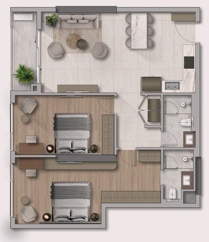
Hình 11. Mặt bằng loại B1 (tim tường 95,4 m², thông thủy 88,9 m²). Nguồn: reflection-westlake.com (brochure của dự án).
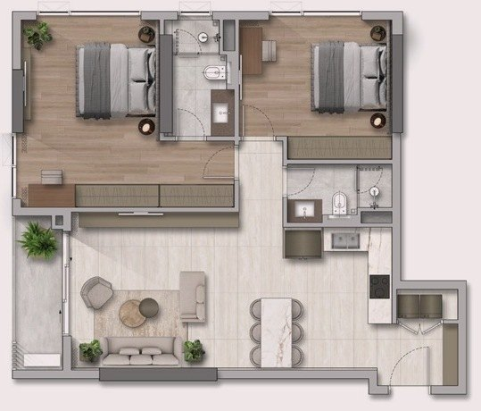
Hình 12. Mặt bằng loại B2 (tim tường 97,7 m², thông thủy 89,8 m²). Nguồn: reflection-westlake.com (brochure của dự án).
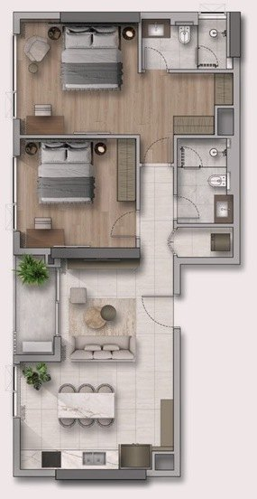
Hình 13. Mặt bằng loại B3 (tim tường 91,0 m², thông thủy 82,5 m²). Nguồn: reflection-westlake.com (brochure của dự án).
Căn hộ 3 phòng ngủ
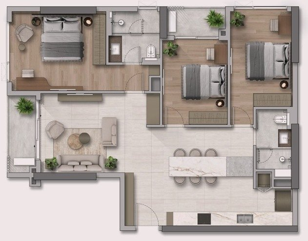
Hình 14. Mặt bằng loại C1 (tim tường 117,5 m², thông thủy 109,0 m²). Nguồn: reflection-westlake.com (brochure của dự án).
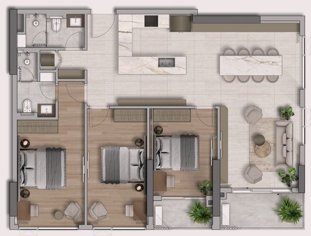
Hình 15. Mặt bằng loại C2 (tim tường 125,7 m², thông thủy 116,9 m²). Nguồn: reflection-westlake.com (brochure của dự án).
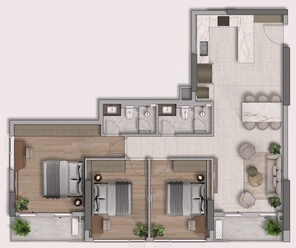
Hình 16. Mặt bằng loại C3 (tim tường 115,6 m², thông thủy 107,4 m²). Nguồn: reflection-westlake.com (brochure của dự án).
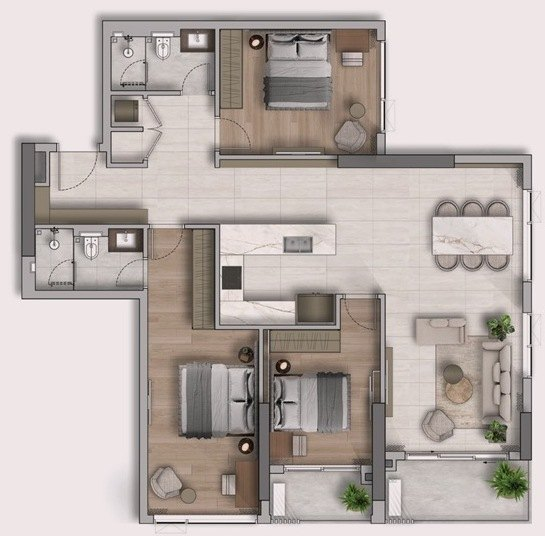
Hình 17. Mặt bằng loại C4 (tim tường 131,9 m², thông thủy 122,0 m²). Nguồn: reflection-westlake.com (brochure của dự án).
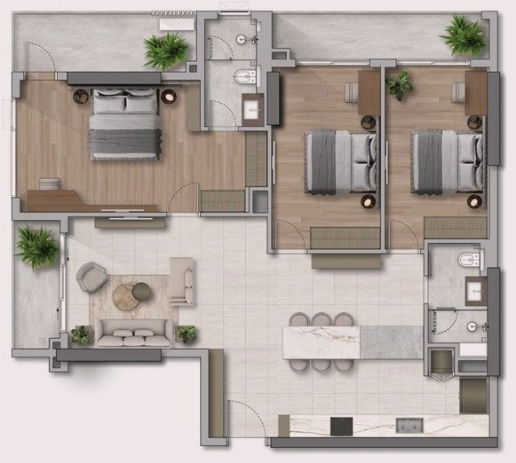
Hình 18. Mặt bằng loại C5 (tim tường 138,9 m², thông thủy 129,8 m²). Nguồn: reflection-westlake.com (brochure của dự án).
Căn hộ 4 phòng ngủ
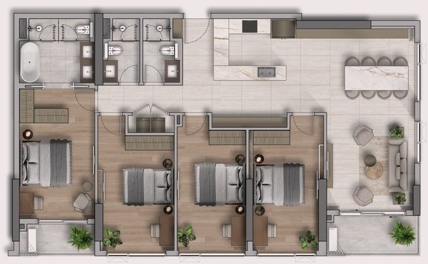
Hình 19. Mặt bằng loại D1 (tim tường 158,8 m², thông thủy 147,6 m²). Nguồn: reflection-westlake.com (brochure của dự án).
Hình 23. Phối cảnh phòng ngủ (hình minh họa). Nguồn: reflection-westlake.com (brochure của dự án).
Quảng cáo
4. Tiện ích và thiết kế
Trang dự án nhấn mạnh mô hình boutique với số căn hạn chế, liền kề khách sạn 5 sao do thương hiệu Radisson quản lý. Brochure cũng giới thiệu cơ cấu từ studio đến penthouse để phù hợp nhiều nhu cầu.
5. Giá tham khảo (gần đúng)
Chỉ để tham khảo, có thể không chính xác. Các mức dưới đây lấy từ bài báo, trang tổng hợp và tin rao; chưa phải bảng giá của chủ đầu tư, có thể chưa hoặc đã gồm VAT, tính theo tim tường hoặc thông thủy tùy nguồn, và thay đổi theo thời điểm. Hãy hỏi chủ đầu tư để có giá hiện hành.
Chưa tìm thấy giá bán công khai (trang dự án trên batdongsan.com.vn để trống). Hãy hỏi đơn vị phân phối chính thức.
6. Tiến độ và nguồn cung
Nguồn cung: 154 căn, nên số căn mỗi mẫu rất ít.
Tiến độ: dự kiến hoàn thành năm 2028 theo một trang tổng hợp.
Chưa có thông tin chính thức trong bài: bảng giá, thanh toán, pháp lý chi tiết.
7. Kết luận
The Reflection West Lake là dự án nhỏ ở Tây Hồ với 154 căn trải từ studio đến penthouse. Vì số căn mỗi mẫu rất ít, mặt bằng và diện tích từng mã quan trọng hơn con số trung bình; hãy xác nhận mã căn còn lại với đơn vị phân phối.
Nguồn: reflection-westlake.com (brochure và trang mặt bằng); batdongsan.com.vn (trang dự án); nhadautu.vn (hợp tác phân phối 02/2026), truy cập 14/11/2026. Hình ảnh và mặt bằng thuộc quyền của chủ đầu tư hoặc đơn vị phân phối; được dùng để minh họa và dẫn nguồn.